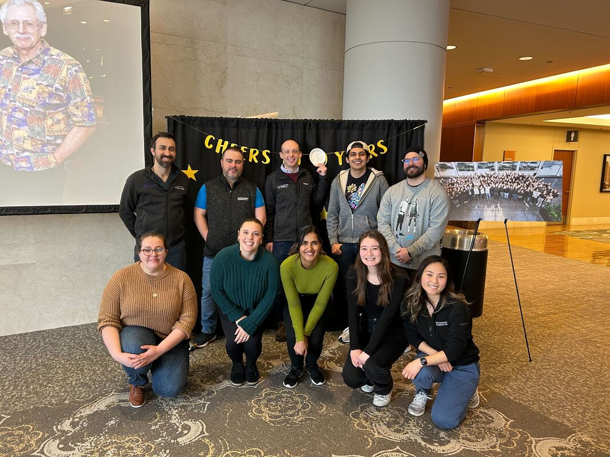
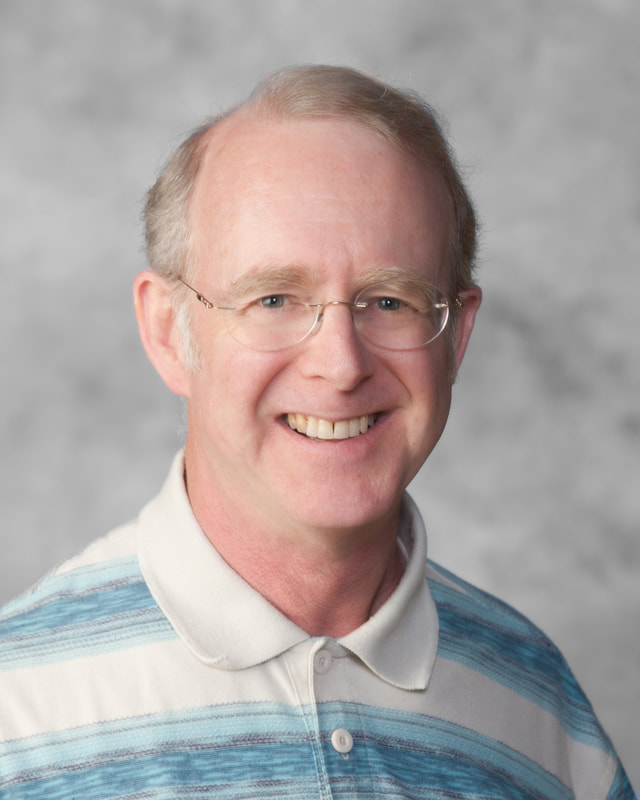
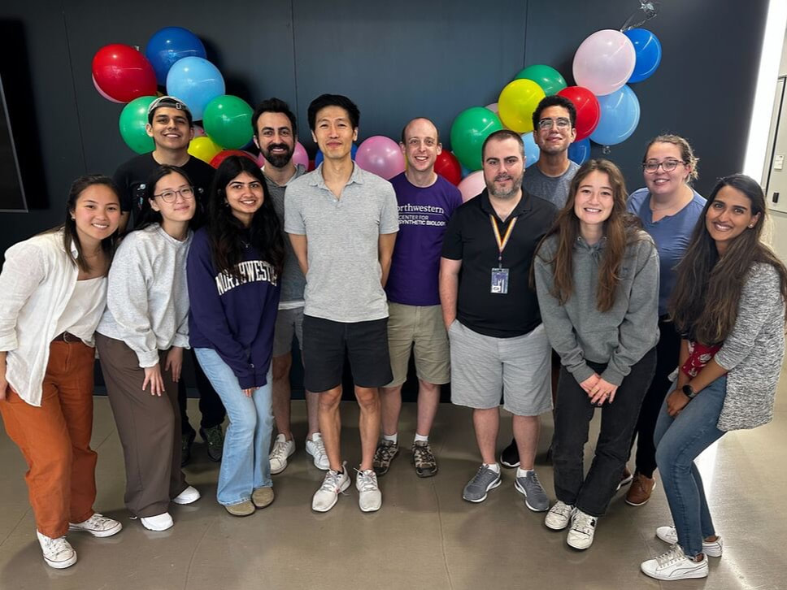
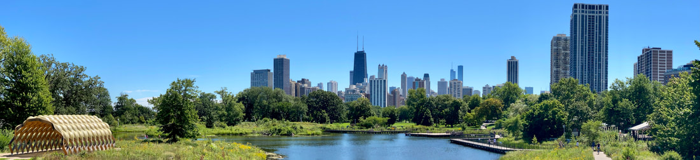
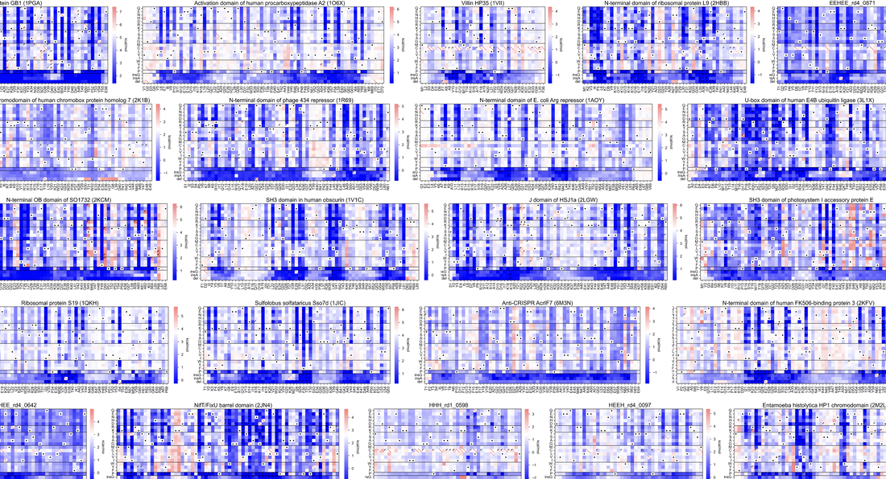
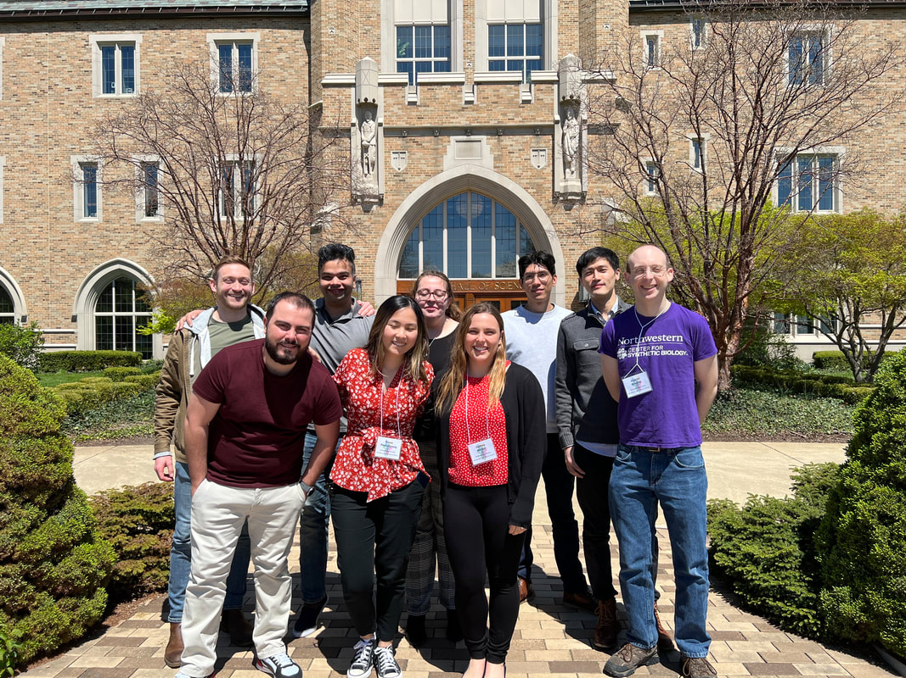
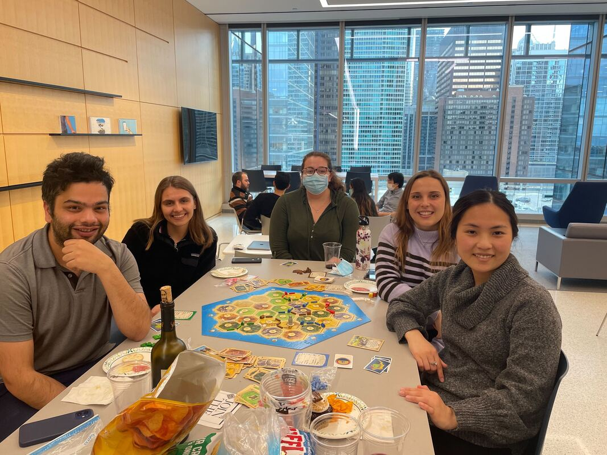
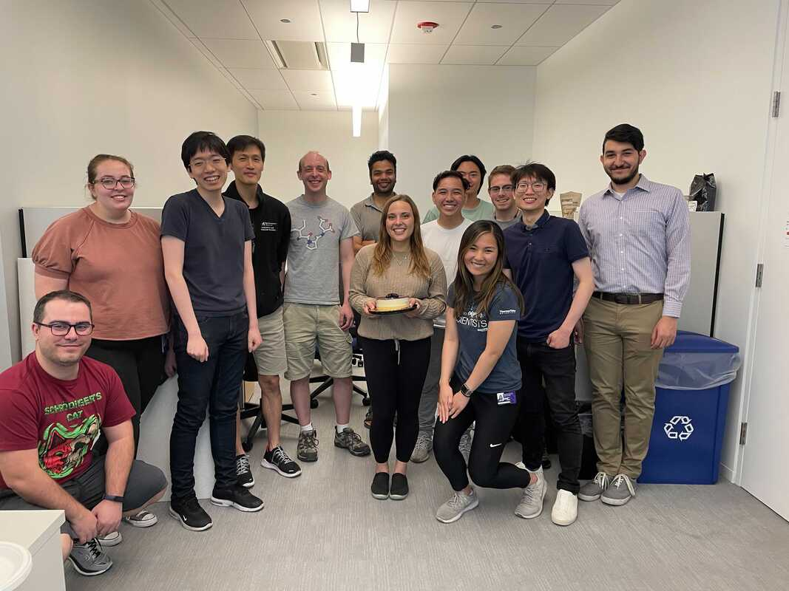
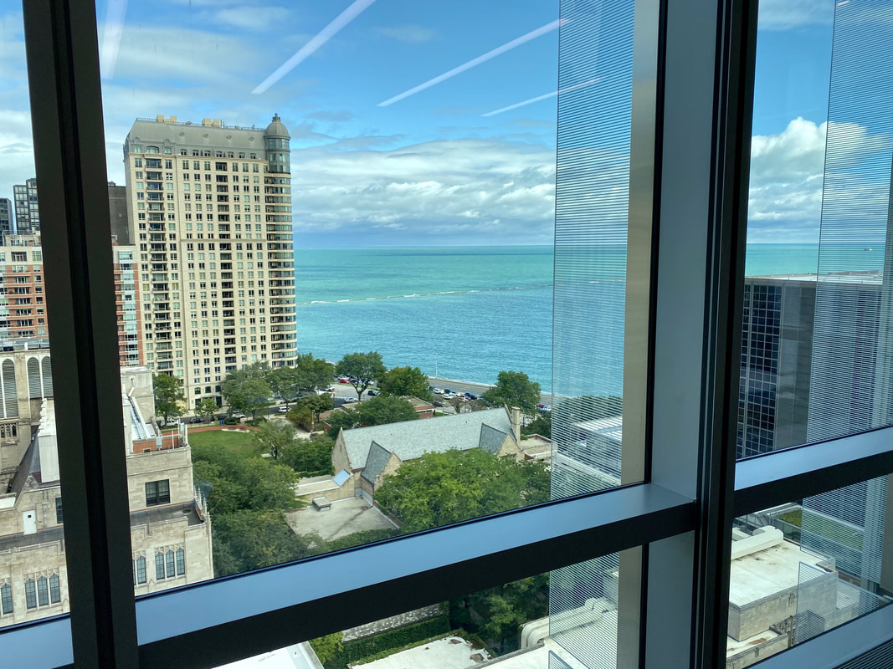

6/10/2025

It's been way too long since I updated this, but tons of things have happened in the lab in the last year and a half! There are so many updates that I'll just list them briefly, but it's been very exciting! New members Ted Litberg and Sara Volz joined the lab as postdoctoral…
Read more →
11/5/2023 · 5 comments

Roy Rocklin My father Roy David Rocklin died on March 19th, 2023. He was 69. Over his life he was a research scientist, a teacher, and a politician as well as a father, grandfather, brother, husband, and dear family member to our entire extended family. I wanted to write a few…
Read more →
9/21/2023

On Aug 25 we celebrated our lab's first thesis defense! Congratulations Tae-Eun for a great talk and pathbreaking thesis that really helped establish key directions and philosophy for the lab.
Read more →
8/15/2023

The Rocklin Lab ( www.rocklinlab.org ) is seeking multiple postdoctoral fellows for experimental and computational projects. We are located in a brand new building on Northwestern’s medical campus in downtown Chicago, in a space dedicated to Northwestern’s Center for Synthetic…
Read more →
7/24/2023

It has been a whirlwind in the Rocklin Lab since the last lab update! Here are some of the exciting developments. Four new lab members! Welcome to Andra and Mario, joining the lab from Northwestern's DGP program! This is the first year we have had two Ph.D. students join! 🏎️🏎️…
Read more →
10/18/2022
Congratulations to Tae-Eun and Kotaro for successfully publishing the Rocklin Lab's first paper!! Congrats as well to Cydney and Claire who played important supporting roles. We learned a lot between our initial submission and our revised version, including that some fraction of…
Read more →
8/18/2022

It has been a busy summer! Here are some updates from the lab: In May the whole lab attended the Midwest Folding Conference in South Bend, IN. Gabe gave the closing talk! Rocklin Lab at the Midwest Protein Folding Conference 2022, Notre Dame At the start of the summer we said…
Read more →
3/11/2022

Thanks to everyone who helped organize and who brought food!
Read more →
2/4/2022
Tae-Eun and Kotaro finished the lab's first preprint!! The title is "Dissecting the stability determinants of a challenging de novo protein fold using massively parallel design and experimentation." Read it here: https://www.biorxiv.org/content/10.1101/2021.12.17.472837v1 And…
Read more →
7/9/2021

At the end of June we said farewell to two long-time researchers in the Rocklin Lab. Radhika Dalal finished her time as a Rosetta Commons Post-baccalaureate Scholar and is now preparing to start her Ph.D. research at UCSF's Biophysics program! We are so excited for her!…
Read more →
4/13/2021
Hi, I want to get in the habit of sharing lab news more, so let me do a big dump of lab news from the lab's second year. Certainly the past year was a painful year for the world and wreaked havoc on the lives of our lab members to varying degrees. But I think we can be proud of…
Read more →
8/2/2020
Postdoctoral positions in high-throughput protein biophysics, machine learning, and design The Rocklin Lab ( www.rocklinlab.org ) is seeking multiple postdoctoral fellows for experimental and computational projects. We are located in a brand new building on Northwestern’s…
Read more →
10/4/2019

Last week we officially moved into our space in the brand new Simpson Querrey building! We're very excited to share the wet lab space along with our Center for Synthetic Biology buddies in the Prindle Lab . Thank you so much to Claire, Wes, and rotation students Katiannah and…
Read more →
9/11/2019
Here's a talk I gave to the incoming DGP students about why they should rotate in our lab. We have at least six rotating students in 2019-2020! ⇩ rocklin_lab_dgp_introduction.pptx (22155 kb)
Read more →
3/15/2019
Well, actually we opened on Monday. Busy week!
Read more →
2/22/2019
I (Gabriel) am coming to/presenting at a number of upcoming conferences, and I'd love meet people interested in joining the lab. In the near future- Biophysical Society (Mar 2-4, Baltimore) - Talk Sunday Mar 3 11:15am in the "Proteins: Exploring Sequence Space via Computation…
Read more →
11/14/2018
We are looking for undergraduate researchers, research technicians, graduate student researchers, and postdoctoral fellows. Our work is interdisciplinary, and we are looking for people with many different backgrounds including biology, chemistry, physics, and computer science.…
Read more →